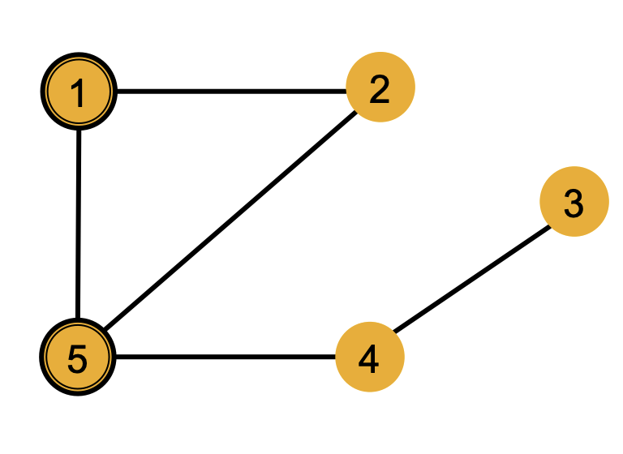
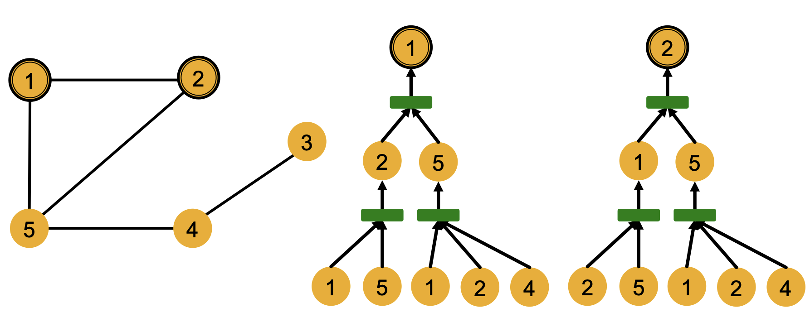

图机器学习7：GNN的训练和应用
图神经网络的表示能力
我们已经了解了一系列经典的图神经网络的架构，比如GCN，GraphSAGE，GAT等等，这些图神经网络可以生成一系列的节点嵌入，但是我们应该怎么评估节点嵌入的表示效果(换句话说就是图神经网络的表示效果)呢？
局部结构和计算图
图中存在一定的局部结构，比如下面的这张图中，节点1和2在局部结构中是对称的，而1和5就不是，因为1和2相互交换之后图的结构不会改变。

而局部结构可以很好的反映出GNN的表达能力，一个好的GNN应该要能表示出节点的局部结构，可以区分对称的节点和不对称的节点，进一步，我们需要理解GNN是如何捕捉局部的结构信息的。
计算图可以表示出GNN中的每个节点如何一步步聚合其他节点的信息形成自己的嵌入向量的过程，比如上图中1和2的计算图如下：

我们发现1和2的计算图的结构非常相似，因此最终得到的1和2的嵌入向量也是相同的，换句话说GNN无法区别节点1和2，而局部结构类似的节点往往会有相似的计算图。
因此GNN的表示能力其实来自于对计算图中的一个子树结构的信息提取，一个好的GNN应该把不同的子树映射成不同的向量。如果一个GNN在每一步中都可以完全获取邻居节点的信息，那么生成的节点嵌入就可以区分不同的子树，也就是说一个表达能力强的GNN的聚合函数应该是一个injective function(单射函数)
GNN的设计
经典架构
本节内容的目标是归纳总结出设计高效GNN的一些方法论。经典的GNN架构中，GCN采用了逐点的均值池化作为聚合函数，而GraphSAGE采用了逐点的最大池化，但是GCN无法区分一些数量不同但节点组成类型相同的局部结构，因为这样的不同结构在均值池化下得到的结果是相同的，与之类似的，GraphSAGE在碰到label集相同的子结构的时候也无法区分，因为这个时候最大池化的结果是相同的。
MLP和GIN
一个GNN的聚合函数最好是一个单射函数，这种函数可以形式化的表示成非线性激活函数和线性函数的组合
这种GNN被认为是表达能力最强的消息传递类GNN，因为采用的MLP理论上可以拟合任何函数，这种GIN实际上是WL核函数的神经网络形式，WL核函数的形式如下：
而GIN就是使用神经网络作为其中的Hash函数，因此GIN模型可以表示为：